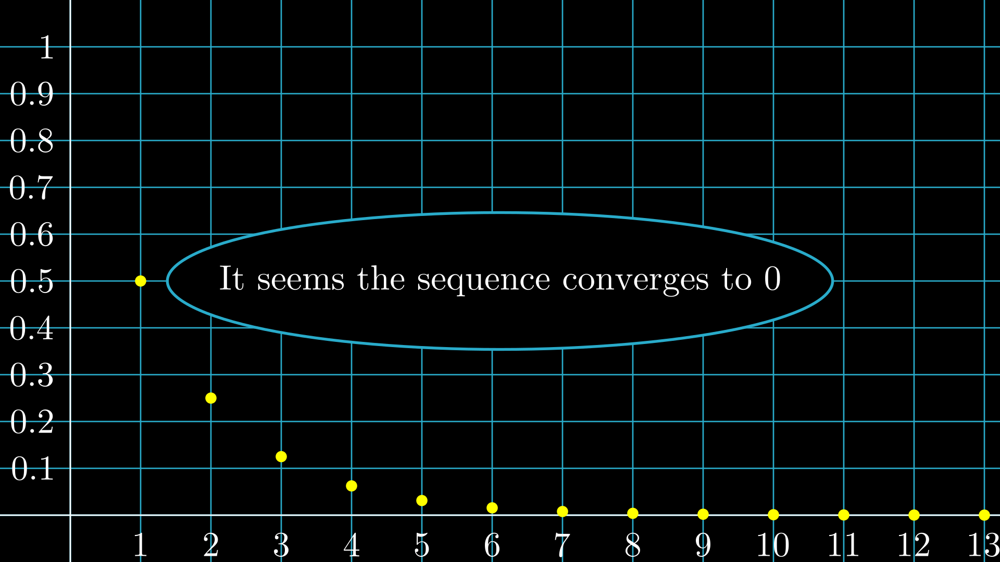

Example 1
As you may know, there're two types of sequences: finite sequences (also known as \(n\)-tuples) and the infinite ones. An infinite sequence is an ordered collection with infinite objects. To describe a sequence \(\{a_n\}\) we use often an equation for the \(n\)th term. We've the following example:
\[a_n=\begin{cases} \displaystyle\frac{1}{2}\text{ if $n=1$}\\[.75em] \displaystyle\frac{a_{n-1}}{2}\text{ if $n\geq 2$} \end{cases}\]
Equivalent to:
\[a_n=\left(\frac{1}{2}\right)^n\]
Where \(n\in\mathbb{Z}^+\). Now I've a question for you. If we choose each time a bigger value for \(n\), which number do we approach? This question is equivalent to say "which number does the sequence converge to?". That value is called "the limit of the sequence", whose notation is the following:
\[\lim_{n\to\infty}a_n\]
To answer this question, we'll see the sequence graph.
Yeah, it seems \(\displaystyle\lim_{n\to\infty}a_n=0\), so we've an idea for making the proof.
Limit definition
In the real numbers, \(\displaystyle\lim_{n\to\infty}a_n=L\) if the numbers of the sequence become closer and closer to \(L\) and not to any other number. Due to this, the formal definition is the following.
For each real number \(\varepsilon>0\), there exists a natural number \(N\) such that, for every natural number \(n> N\), we have \(|a_n-L|<\varepsilon\).
This means if we take a certain \(\varepsilon\) as a distance (it's positive because is a distance), then there is a natural number \(N\) such that if we continue making our \(n\) bigger and bigger, the distance between \(a_n\) and \(L\) will be less than our \(\varepsilon\) (that means they're closer), due to that, the limit of the sequence will be \(L\), I mean the value the sequence approaches when we make our \(n\) very big.
So let's make the proof!
As you know, the sequence is given by \(\displaystyle a_n=\left(\frac{1}{2}\right)^n\). We can say equivalently:
\[a_n=\frac{1}{(1+1)^n}\]
We could apply Bernoulli's inequality to the denominator. We know \((1+1)^n\geq (1+n)\), so we've the following:
\begin{align*} a_n &\leq \frac{1}{1+n}\\ &<\frac{1}{n} \end{align*}
We must achieve \(|a_n-0|=a_n<\varepsilon\) (because \(a_n>0\)) and we've \(\displaystyle a_n<\frac{1}{n}\). Also we know if \(n>N\), then \(\frac{1}{n}<\frac{1}{N}\). So there would be some \(N\) that satisfies the following statement:
\begin{align*} a_n &<\frac{1}{n}\\ &<\frac{1}{N}\\ &<\varepsilon \end{align*}
We'll achieve it if we find a solution \(N\) in the equation \(\displaystyle\frac{1}{N}<\varepsilon\)! Remember \(N\) is an integer. A solution is the integer \(N=\lceil\frac{1}{N}\rceil\) and since there exists an \(N\), we've proven the limit converges to \(0\). Hurray!
Homework
Prove that the sequence \(\displaystyle x_n=\frac{2n+4}{n}\) has a limit of \(2\). Also, find all terms whose distance from \(2\) is less than \(0.1\).